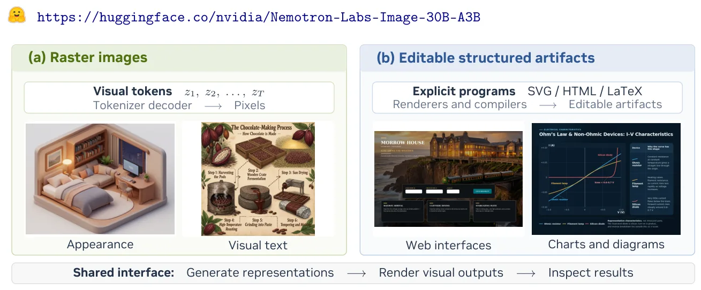
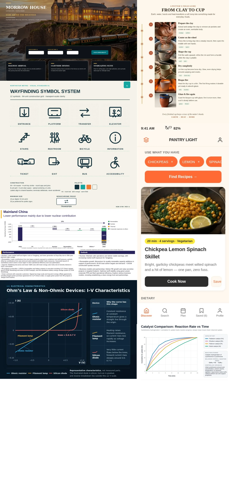

O Desafio da Criação Visual Híbrida
A criação visual moderna não se limita à geração de imagens fotorealistas. Quando um usuário solicita um infográfico, um site ou um slide, ele exige tanto expressão artística quanto controle preciso sobre texto, layout e estrutura. Sistemas tradicionais de geração de imagens (diffusion models ou autoregressivos) produzem pixels brutos, o que torna difícil editar texto específico ou alterar a geometria de um gráfico sem regenerar tudo do zero.
Este paper introduz o Nemotron-Labs-VisualCreation, um framework agêntico que tenta resolver essa lacuna. A ideia central é tratar tanto imagens raster quanto artefatos estruturados (como SVG, HTML/CSS e código de plotagem) como representações que podem ser geradas, renderizadas e inspecionadas por um agente. Isso permite que o sistema não apenas crie uma imagem, mas entregue um arquivo editável quando necessário.
O framework é construído sobre a premissa de que a síntese expressiva e o controle explícito devem ser coordenados através de uma interface comum. Em vez de escolher entre um gerador de imagens e um gerador de código, o sistema integra ambos, permitindo artefatos híbridos que combinam ativos visuais gerados com representações explícitas editáveis.

A Interface Pixel as Code
O núcleo do framework é a interface 'Pixel as Code'. Ela define um fluxo comum: gerar uma representação, renderizá-la para saída visual e inspecionar o resultado. Para imagens raster, a representação consiste em tokens visuais discretos aprendidos, que são decodificados em pixels. Para artefatos estruturados, a representação são programas explícitos (código) que expõem conteúdo, geometria e layout.
Essa distinção é crucial. Tokens visuais capturam a aparência raster, enquanto programas explícitos permitem edição direta através de seus backends de renderização. Artefatos híbridos combinam as duas abordagens, como embutir uma imagem gerada dentro de uma página HTML editável. Isso resolve o problema de controle fino: o texto e a estrutura são mantidos como código, enquanto o fundo ou elementos gráficos complexos são gerados como pixels.
O sistema utiliza um 'harness' nativo da Nemotron que coordena o planejamento semântico, a geração de candidatos raster e a seleção visual. Para solicitações estruturadas e híbridas, o sistema estabelece um 'contrato de layout' e produz representações editáveis. Em artefatos baseados em navegador, auditorias visuais atribuem falhas a 'proprietários causais', permitindo reparos direcionados e seleção de checkpoints.
Componentes do Sistema
Para suportar essa interface, os autores desenvolveram três componentes principais. Primeiro, o Nemotron-Labs-Image-Tokenizer, que converte imagens em tokens visuais discretos. Segundo, o Nemotron-Labs-Image-30B-A3B, um gerador raster autoregressivo nativo da Nemotron. Terceiro, a família de modelos Nemotron-Labs-VisionCode, especializada na geração de código estruturado e marcação.
O tokenizador é treinado para representar raster images de forma eficiente. O gerador de imagem é adaptado a partir do Nemotron 3 Nano através de mid-training multietapa e reforço (reinforcement learning). Os modelos VisionCode são variantes especializadas para gerar SVG, HTML e outros formatos de código. Essa separação permite que cada componente seja otimizado para sua tarefa específica, mas coordenados pelo mesmo agente.
Qualidade e Eficiência do Tokenizador
A avaliação começa com a qualidade de reconstrução do tokenizador. Eles testaram em aproximadamente 178K imagens de seis domínios visuais: fotografias naturais, documentos, gráficos, capturas de tela de UI, rostos e imagens geradas ou editadas. O metric principal foi o PSNR (Peak Signal-to-Noise Ratio), além de SSIM, LPIPS e GMSD.
Os resultados mostram uma melhoria significativa em relação ao Emu3.5 IBQ. O PSNR aumentou de 26.08 dB para 29.57 dB, uma melhoria de 3.49 dB. O SSIM subiu de 0.781 para 0.834, enquanto o LPIPS diminuiu em aproximadamente 17% e o GMSD em 32%. Todas as seis domínios mostraram melhorias nessas métricas de fidelidade, com ganhos de PSNR de 4.63–5.35 dB em documentos, gráficos e capturas de tela de UI. Isso é particularmente relevante para renderizadores usados em artefatos que contêm texto e layouts estruturados.
Além da fidelidade, a eficiência é crítica. Em testes em GPUs NVIDIA A100 com batch size 1, o novo tokenizador codifica uma imagem em 41.30 ms e a decodifica em 37.10 ms. Em comparação, o Emu3.5 leva 294.53 ms para codificar e 405.46 ms para decodificar. Isso resulta em speedups de 7.13x na codificação e 10.93x na decodificação. Essa eficiência permite que o agente itere rapidamente entre geração e inspeção visual.
Geração de Código Visual
Os modelos Nemotron-Labs-VisionCode foram avaliados em tarefas de geração de código visual, incluindo Chart2Code, MMSVG (image-to-SVG e text-to-SVG), Design2Code e Image2Struct. Um dos modelos VisionCode (120B) superou o Kimi K3.1 Pro no agregado equilibrado entre tarefas, usando menos parâmetros totais e ativos.
Essa capacidade de gerar código editável é o que diferencia o framework de geradores de imagem puramente raster. Ao produzir SVG ou HTML, o sistema entrega não apenas uma imagem, mas um arquivo que pode ser aberto e modificado em editores de código ou navegadores. Isso é essencial para aplicações profissionais onde a editabilidade é tão importante quanto a qualidade visual.

Avaliação do Sistema Agêntico
A avaliação de sistema mede o desempenho do framework completo, incluindo o agente que coordena a geração e o reparo. No benchmark GenEval2 Soft-TIFA GM, a configuração nativa da Nemotron elevou a pontuação de 31.71 para 52.56, usando o mesmo gerador raster. No WISE Verified, a pontuação subiu de 46.30 para 88.60.
Esses ganhos demonstram que a interface agêntica e o reparo direcionado fazem uma diferença significativa. O agente não apenas gera uma imagem, mas inspeciona o resultado renderizado, identifica falhas (como texto incorreto ou layout quebrado) e aplica reparos específicos. Isso é especialmente útil para artefatos híbridos, onde componentes podem ser ajustados independentemente.
Comparação com Soluções Comerciais
O framework foi comparado com soluções comerciais como GPT Image 2 e Nano Banana Pro em benchmarks disponíveis. Com a melhor configuração, o Nemotron-Labs-VisualCreation alcançou desempenho competitivo em maioria das métricas. No BizGenEval, que avalia design visual comercial, o sistema mostrou pontuações robustas, embora os resultados do gerador raster standalone não tenham sido reportados isoladamente.
É importante notar que as comparações de sistema medem o workflow completo, enquanto os testes de codificação standalone avaliam as variantes treinadas separadamente do harness Dual Coder. Isso significa que os ganhos do sistema vêm tanto da qualidade dos modelos base quanto da eficácia da coordenação agêntica.
Conclusão
O Nemotron-Labs-VisualCreation apresenta uma abordagem unificada para criação visual, combinando síntese raster e criação estruturada editável através da interface Pixel as Code. O tokenizador de imagem melhora a fidelidade de reconstrução e a eficiência de codificação/decodificação, enquanto os modelos VisionCode estabelecem novos estados da arte em geração de código visual.
O framework mostra que a coordenação agêntica, com inspeção visual e reparo direcionado, pode elevar significativamente o desempenho em tarefas complexas de criação visual. Ao entregar artefatos editáveis, o sistema atende a necessidades profissionais que vão além da geração de imagens estáticas. Trabalhos futuros podem isolar capacidades individuais do agente e explorar edição condicionada a texto e imagem.
O que fica
- O framework 'Pixel as Code' unifica tokens visuais aprendidos e programas explícitos em uma única interface de geração e renderização.
- O tokenizador de imagem melhora a reconstrução PSNR em 3.49 dB sobre o Emu3.5 e é até 10.93x mais rápido na decodificação.
- O modelo VisionCode supera o Kimi K3.1 Pro em tarefas de código visual, usando menos parâmetros ativos.
- O sistema agêntico permite reparo direcionado e seleção de candidatos baseada em feedback visual renderizado.
Paper original: Nemotron-Labs-VisualCreation: Pixel as Code for Agentic Visual Creation
Comentários
Nenhum comentário ainda. Seja o primeiro.